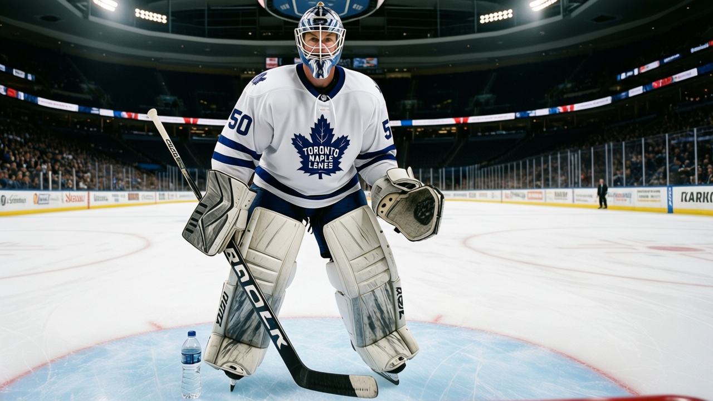

TOR
TORFive wins, three by a single goal, and the crease still won't hold still
Toronto's streak is alive but the margins have collapsed, and tonight in Edmonton the crease question gets another 60 minutes to answer itself
 Sam OkaforLeafs beat reporter · Queen City Telegram
Sam OkaforLeafs beat reporter · Queen City Telegram
 Ed Belfour93 starts tonight in
Ed Belfour93 starts tonight in  Edmonton Oilers. He has played 12 of Toronto's 36 games.
Edmonton Oilers. He has played 12 of Toronto's 36 games.  David Aebischer86 has played 19. The Bureau's Development Index lists Mikael Tellqvist75 as a faller, down 3, his overall reading 72 against a base of 77.
David Aebischer86 has played 19. The Bureau's Development Index lists Mikael Tellqvist75 as a faller, down 3, his overall reading 72 against a base of 77.
Mikael Tellqvist is the third name in a rotation that was supposed to be over by now. The three-way ended in mid-December when Tellqvist came back from injury, and the desk wrote that the competition had resolved itself. It has not resolved itself. Belfour went back to G1 on 24 December and holds it tonight, but Aebischer has played seven more games than he has.
The streak is the other story. Toronto is 5-0-0 in its last five, but look at the margins. Nine goals against  St. Louis Blues on 21 December. Seven against
St. Louis Blues on 21 December. Seven against  Tampa Bay Lightning on 19 December. Two against
Tampa Bay Lightning on 19 December. Two against  Florida Panthers on 18 December. One against
Florida Panthers on 18 December. One against  Atlanta Thrashers on 23 December. One against
Atlanta Thrashers on 23 December. One against  Calgary Flames on 27 December, in overtime.
Calgary Flames on 27 December, in overtime.
The goal differential per game across that five-game stretch: +7, +6, +2, +1, +1. The club is 27-6-0, 60 points, and leads the Northeast by 23 over  Buffalo Sabres. None of that is in doubt. The question tonight and Saturday in
Buffalo Sabres. None of that is in doubt. The question tonight and Saturday in  Vancouver Canucks is whether this team is tightening up in the right way or running out of blowout fuel before the January schedule brings
Vancouver Canucks is whether this team is tightening up in the right way or running out of blowout fuel before the January schedule brings  New Jersey Devils twice and
New Jersey Devils twice and  Boston Bruins.
Boston Bruins.
Edmonton Oilers sits at 13-13-1, 43 points, on a two-game losing streak. The Oilers have 4 players on the injured list, including  Brad May69 (elbow, back 2 January). They are 10-6 at home. Toronto is 11-3 on the road, the second-best away record in the Northeast behind Buffalo Sabres's 7-9 which is not close.
Brad May69 (elbow, back 2 January). They are 10-6 at home. Toronto is 11-3 on the road, the second-best away record in the Northeast behind Buffalo Sabres's 7-9 which is not close.
 Gary Roberts87 has 44 points in 36 games.
Gary Roberts87 has 44 points in 36 games.  Alexander Mogilny87 has 45 in 32. The veteran top-six is carrying the scoring load while the development pieces (see below) climb the Index. Tonight is the next test of whether that combination holds under the narrowing-margin pattern the last two weeks have set.
Alexander Mogilny87 has 45 in 32. The veteran top-six is carrying the scoring load while the development pieces (see below) climb the Index. Tonight is the next test of whether that combination holds under the narrowing-margin pattern the last two weeks have set.
The road trip continues 31 December in Vancouver Canucks.  Ed Jovanovski85 is out for Vancouver Canucks with a knee, return 19 February.
Ed Jovanovski85 is out for Vancouver Canucks with a knee, return 19 February.